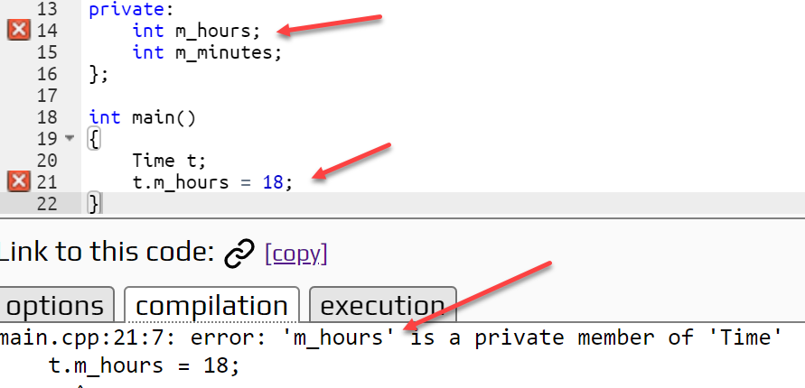

Public and Private
So, what do public and private mean in C++? If a member of a class is public, then any part of your code can access and manipulate it directly. If you have a public member function, any code can call it using an object of that type. If a data member is marked private, then only member functions of the class can access it.
The public and private keywords are the C++ mechanism for defining interfaces and enforcing encapsulation. Once you add private, the compiler enforces the appropriate encapsulation.

By prohibiting clients from directly accessing private data, the implementation can assume that all access to that data goes through the public interface (unlike the Time struct of last week, where clients should use the member functions, but were not prohibited from directly accessing the data members m_hours and m_minutes.)
Actually, the only real difference between class and struct in C++ is that with a struct, the members are public by default; with a class they are private. By convention, we will use struct for POD (plain-old-data) data types, and class for encapsulated types.
 This course content is offered under a
CC
Attribution Non-Commercial license. Content in this course
can be considered under this license unless otherwise noted.
This course content is offered under a
CC
Attribution Non-Commercial license. Content in this course
can be considered under this license unless otherwise noted.